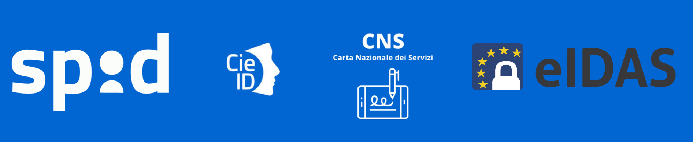

Che cos'è?¶
CohesionID è il framework di autenticazione della Regione Marche che permette di verificare la corretta identità degli utenti (Persone fisiche munite di codice fiscale) che accedono a servizi digitali della Regione o degli Enti convenzionati.
Cohesion gestisce il processo di autenticazione mentre demanda al sistema integrante il processo di autorizzazione/profilatura utente all’applicazione chiamante. Cohesion supporta diversi livelli di autenticazione sicura: basso, significativo ed elevato.
Con quali modalità è possibile accedere con Cohesion?¶

Cohesion supporta tutti i principali sistemi di autenticazione e di identificazione digitale verso i sistemi della PA, previsti dal Codice dell’Amministrazione Digitale (decreto legislativo 7 marzo 2005, n. 82). I cittadini possono accedere tramite le loro credenziali SPID, con la loro Carta di Identità Elettronica (CIE-ID), Tramite CNS e tramite il nodo italiano eIDAS. Ulteriori informazioni circa le due modalità di accesso principali sono reperibili all’indirizzo: Cohesion
Accedere con SPID¶
Il Sistema Pubblico di Identità Digitale (SPID) è un’identità digitale composta da una coppia di credenziali (username e password), strettamente personali, con le quali è possibile accedere ai servizi online della pubblica amministrazione e dei privati aderenti. Per ottenere le tue credenziali SPID puoi rivolgerti a uno dei gestori di identità (detti identity provider) accreditati dall’Agenzia per l’Italia Digitale (AgID). Al momento i gestori d’identità sono 12: Aruba PEC SpA, Etna Hitech SCpA, InfoCamere SCpA, InfoCert SpA, Intesi Group SpA, Lepida ScpA, Namirial SpA, Poste Italiane SpA, Register SpA, Sielte SpA, TeamSystem SpA e TI Trust Technologies Srl. Ogni gestore offre diverse modalità per richiedere e ottenere SPID: scegli quella più adatta alle tue esigenze. Per tutte le informazioni su dove e come chiedere le tue credenziali SPID vai alla pagina Come attivare SPID.
Accedere con CIE¶
La Carta di Identità Elettronica (CIE) è la chiave di accesso, garantita dallo Stato e rilasciata dal Ministero dell’Interno, che permette al cittadino di autenticarsi in tutta sicurezza ai servizi online di enti e pubbliche amministrazioni che ne consentono l’utilizzo.
Grazie alla CIE i cittadini non devono più utilizzare credenziali diverse per ogni Amministrazione, ma hanno a disposizione un unico strumento di identificazione fisica e digitale per accedere ai servizi in rete, pubblici e privati, in Italia e in Europa.
Infatti, con la realizzazione del nodo eIDAS italiano si completa il progetto di cittadinanza digitale europea, che permette ai titolari di una CIE di accedere anche ai servizi online di altri Paesi dell’Unione Europea (ad esempio servizi universitari, bancari o delle pubbliche amministrazioni). Per informazioni sul come ottenere ed attivare la tua CIE, consulta la pagina CIE: La Carta di Identità Digitale
Accedere con CNS¶
La Carta Nazionale dei Servizi (CNS) è uno strumento di identificazione in rete che consente la fruizione dei servizi delle amministrazioni pubbliche. La CNS non contiene la foto del titolare e non richiede particolari requisiti di sicurezza per il supporto plastico. La completa corrispondenza informatica tra CNS e Carta d'Identità Elettronica (CIE) assicura l’interoperabilità tra le due carte. Per maggiori informazioni circa le modalità di accesso con CNS è possibile consultare il sito CNS: Carta Nazionale dei Servizi